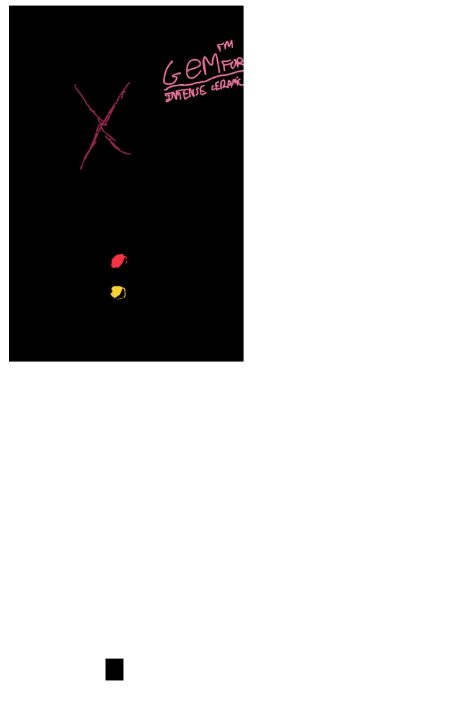

Personas and Storyboard Page
Introduction
Imagine you are using a new blow dryer for the first time. It's just a blow dryer you may think. Well, it's not that simple.
A new blow dryer has various components, for instance buttons and layouts, that may be unlike any you have ever touched.
For instance, imagine interacting with this blow dryer for the first time of your life:

In this particular hair dryer, it consists of various components that are commonly founded on various hair dryers.
Let's see how people interact with this Gem hair dryer. Time to test!
Observations of Test
User 1:
- Plugged in the hair dryer into an electrical outlet immediately
- Couldn’t get the power to flow to the hair dryer and accordingly pressed various buttons / switches. Made confused expressions.
- They then realized there was a red button on the plug
- Pressed the switches in various directions while aiming the dryer at their head
User 1 was stuck on the red button concern for quite some time but was able to realize they needed to press on it after randomly every button on the dryer.
User 2:
- Plugged in the dryer into an electrical outlet and immediately pressed the red button
- Turned both switches to power 3 and pressed the cool air button a number of times while aiming the dryer at their head
- Very confident demeanor
In reflection, compared to both other users, user 2 was very certain of all his selections while using the hair dryer. He pressed the button immediately, which thereby passed in the electrical current to the dryer.
User 3:
- Plugged dryer into an electrical outlet
- Tried pressing the cool air button and requested help from others since no air was coming out
- Was told they had to press the red button the cord
- Was subsequently very confident with the hair dryer and aimed it at their head while pressing the switches to power 3
User 3 did not notice that there were buttons on the power cord. They merely pressed the buttons and switches on the hair dryer’s handle.